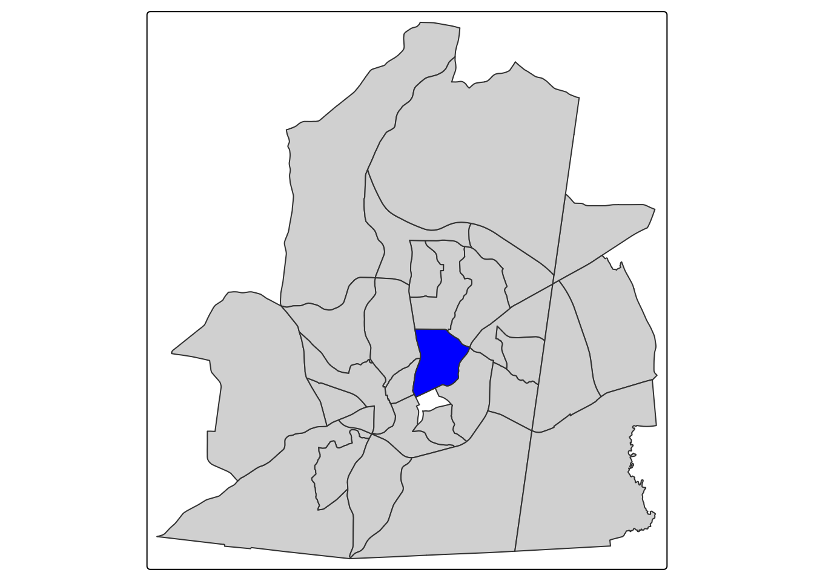
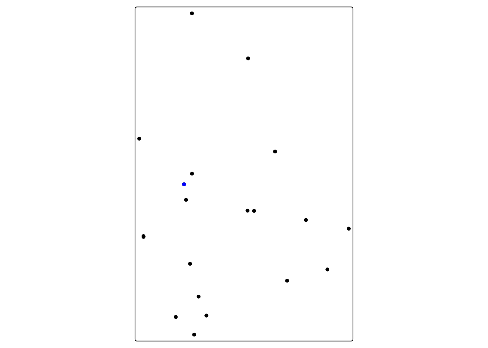
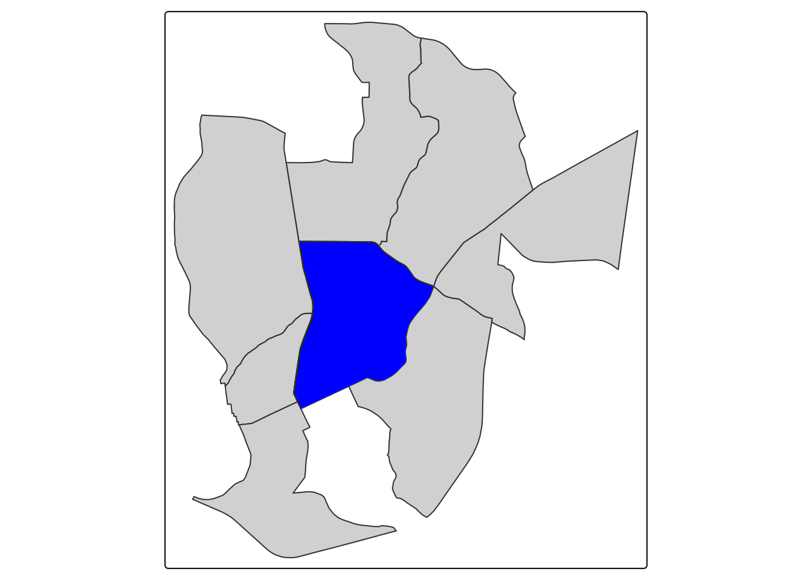
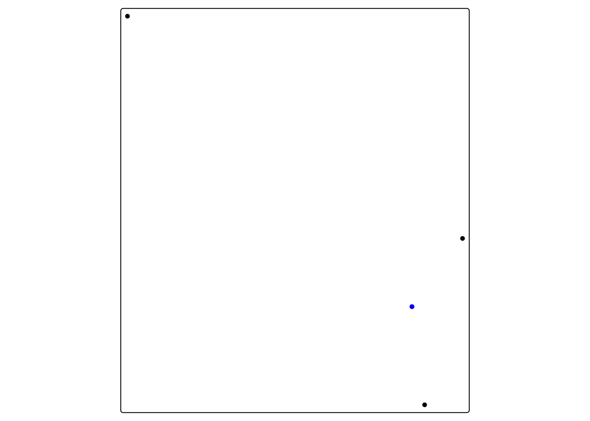
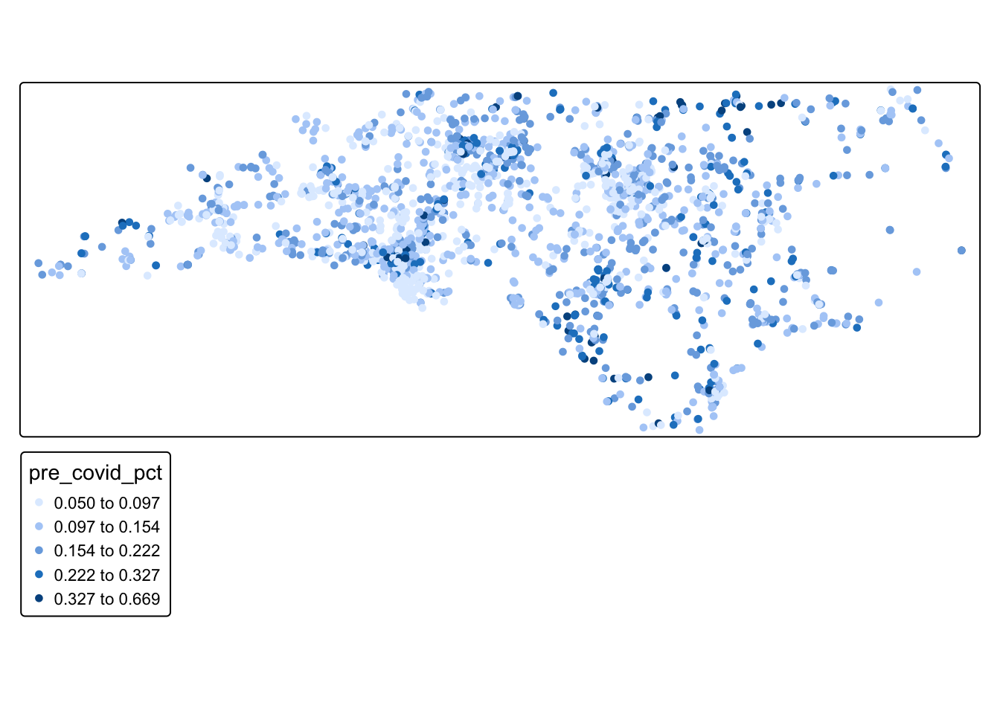
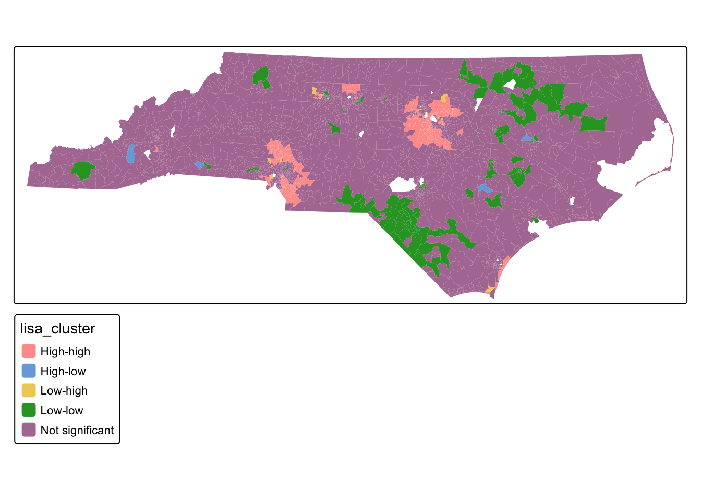
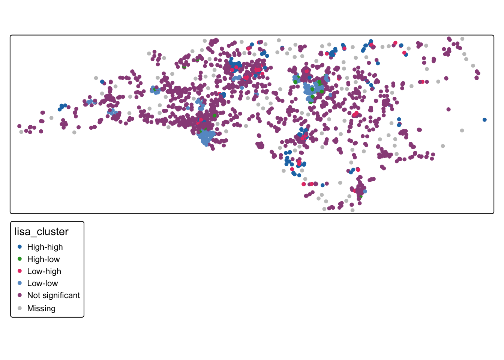

library(tmap)
library(tidyverse)
library(spdep)
library(sf)
#Note that the crs
#of the datasets is NAD83/ North Carolina, meaning that the units are feet
tracts_sf <- st_read("https://drive.google.com/uc?export=download&id=1_X3s6sTw5zeIuXa6wDQ61r8Px7_tI7Nr")
schools_sf <- st_read("https://drive.google.com/uc?export=download&id=1mUxk0R_lqcfuJppw_A-1vy-pcB9XdCnS")15 Spatial Autocorrelation
Tobler’s First Law of Geography reminds us that everything is related to everything else, but near things are more related than distant things. Spatial autocorrelation describes how a variable is correlated with itself across geographic space. In other words, spatial autocorrelation can tell us how related near things are to each other in our dataset.
Point pattern analysis is focused on the location of events. In point patterns, the source of randomness is the location itself. In assessing autocorrelation, we are considering whether the value at locations is random.
There are two general scenarios in which we might want to analyze autocorrelation:
- Areal units: Many sources of geographical data come aggregated into zones that may or may not be meaningful. For instance, census data is aggregated from the individual household level to statistical units (like census tracts). In these cases, the location of the units is pre-determined, so it is not meaningful to analyze location. Instead, it is useful to consider values at these fixed locations to determine if there are spatial patterns in the variable.
- Locations: For some datasets, we might be interested both in the pattern of location AND the pattern in value. In these cases, both the location and value are meaningful– for instance, our lightning strike dataset. In this case, we might be interested in both where the lightning strikes are and something about the the strikes when they occur (for instance, are more powerful strikes located near each other).
Just like point pattern analysis, quantifying autocorrelation is useful because it helps us understand the spatial pattern/structure of our data, which helps us in generating hypotheses about the processes that generate the pattern.
In addition, spatial autocorrelation allows us to understand how spatially dependent our variable is. Spatial dependence can be a serious problem for applying traditional statistical methods because these methods generally have an assumption of independence. Measuring the strength of spatial dependence helps us evaluate how serious this issue is and decide whether we need to adjust our approach- for example, by modifying our sampling design, using methods that account for spatial structure, or interpreting results with greater caution.
After completing these exercises, you should be able to:
- Define spatial neighborhoods using distance, k-nearest neighbors, and contiguity
- Assess global autocorrelation using Moran’s I
- Assess local autocorrelation using LISA
We will use the following spatial data:
- Median household income and commute to work time from the American Community Survey
- Chronic absence data at North Carolina public schools
In this chapter, we will explore autocorrelation in the Median Household Income variable from the 2023 American Community Survey for North Carolina census tracts and chronic absences at North Carolina public schools.
To follow along with this tutorial, make a new .Rmd document. As you move through the tutorial add chunks, headers, and relevant text to your document.
15.1 Reading in Data
15.2 Defining Neighbors
In order to quantify spatial autocorrelation, we need to define each observation’s “spatial neighborhood” so that we can see how related an observation is to the observations near it. There are many ways to define neighbors, and the decision about what definition to use should reflect the processes you hypothesize might be shaping the spatial pattern. For example, if you are studying the spread of a disease, it may be appropriate to define neighbors based on travel networks or adjacency of regions. If you are examining soil properties, a distance-based neighborhood might better reflect how conditions diffuse across space. Some neighborhood definitions can be used for both areal and point datasets and some are specific to the unit of analysis.
We can explore three different neighborhood definitions using our datasets:
15.2.1 Distance Threshold (Point and Areal)
One way to determine neighbors is to set a distance threshold. Any observations within a set distance would be considered a neighbor. For our census tracts, we could set a distance of 3 miles. The code below demonstrates the neighborhood for the census tract that campus is in.
#isolate ch tract
ch_tract <- tracts_sf |> filter(GEOID == 37135011400)
#get 10 mile radius
neighborhood_rad <- ch_tract |> st_buffer(15840)
#get neighbors
neighbors <- st_filter(tracts_sf, neighborhood_rad)
tm_shape(neighbors) + tm_polygons() + tm_shape(ch_tract) + tm_polygons(fill = "blue")
For our school dataset, we could say that any school within 20 miles is a neighbor
#isolate Chapel Hill High School
chhs <- schools_sf |> filter(school_nam == "Chapel Hill High")
#get 5 mile radius
chhs_neighborhood_rad <- chhs |> st_buffer(26400)
#get neighbors
chhs_neighbors <- st_filter(schools_sf, chhs_neighborhood_rad)
tm_shape(chhs_neighbors) + tm_dots() + tm_shape(chhs) + tm_dots(fill = "blue")
15.2.2 Queens Case (Areal)
The Queens Case neighborhood definition is extremely common in spatial statistics that consider contiguous aerial units (like census tracts). The Queens neighborhood selects neighbors based on any contact (including corners) with the feature of interest. We can’t use contiguity based neighbors for points since they do not touch. The Queens neighborhood for Chapel Hill would look this this:
queen_neighbors <- tracts_sf |> st_filter(ch_tract, .predicates = st_intersects)
tm_shape(queen_neighbors) + tm_polygons() + tm_shape(ch_tract) + tm_polygons(fill = "blue")
15.3 K-Nearest Neighbors (Areal and Point)
The k-nearest neighbor definition selects the nearest neighbors based on a set number of neighbors. For instance, for our Chapel Hill High point, we could set number of neighbors to 3.
#calculate distances
calc_dist <- chhs_neighbors |> st_distance(chhs)
#assign distances as a variable
chhs_neighbors$distance <- calc_dist
#get 3 closest neighbors (we say 4 since CHHS will be the first closest (0ft))
neighbors <- chhs_neighbors |> arrange(distance) |> slice_head(n = 4)
tm_shape(neighbors) + tm_dots() + tm_shape(chhs) + tm_dots(fill = "blue")
15.4 Calculating Global Autocorrelation
To calculate global autocorrelation, we can use Moran’s I. Moran’s I gives an indication of how clustered, random, or dispersed a dataset value is across space. It goes from -1 (perfect dispersion) to 1 (perfect clustering). Let’s start by making a basic map of our variable of interest.
The main parameter for calculating Moran’s I is the neighborhood definition.
15.4.1 Global Autocorrelation in Median Household Income
We can start by making a basic map of our variable of interest.
tm_shape(tracts_sf) + tm_polygons(fill = "med_hh_inc", fill.scale = tm_scale_intervals(style = "fisher"), col_alpha = 0)
Q1: Just by looking at the values on the map, do you see evidence of a spatial pattern?
We can formalize this by calculating Moran’s I using Queens Case neighbors
#calculate neighborhoods
nb <- poly2nb(tracts_sf, queen = TRUE) # queen shares point or border
#set neighborhood weight matrix
nbw <- nb2listw(nb, style = "W")
#calculate Morans I
gmoran <- moran.test(tracts_sf$med_hh_inc, nbw)
gmoran
Moran I test under randomisation
data: tracts_sf$med_hh_inc
weights: nbw
Moran I statistic standard deviate = 51.74, p-value < 2.2e-16
alternative hypothesis: greater
sample estimates:
Moran I statistic Expectation Variance
0.5886766588 -0.0003806624 0.0001296167 Our Moran’s I indicates strong clustering (.59) at a highly statistically significant level (very small p-value). Therefore, we now know that, at the global scale, this dataset is clustered.
15.4.2 Global Autocorrelation in School Absence Rate
We can map chronic absence rate before Covid (which we’ve done before)
tm_shape(schools_sf) + tm_dots(fill = "pre_covid_pct", fill.scale = tm_scale_intervals(style = "fisher"), col_alpha = 0)
Q2: Just by looking at the values on the map, do you see evidence of a spatial pattern?
We can then calculate Moran’s I using a our 20-mile distance-based neighborhood definition
#calculate neighborhoods
nb_school <- dnearneigh(schools_sf, d1 = 0, d2 = 26400) Warning in dnearneigh(schools_sf, d1 = 0, d2 = 26400): neighbour object has 247
sub-graphs#set neighborhood weight matrix
nbw_school <- nb2listw(nb_school, style = "W", zero.policy = T)
#calculate Morans I
gmoran_school <- moran.test(schools_sf$pre_covid_pct, nbw_school)
gmoran_school
Moran I test under randomisation
data: schools_sf$pre_covid_pct
weights: nbw_school
n reduced by no-neighbour observations
Moran I statistic standard deviate = 15.434, p-value < 2.2e-16
alternative hypothesis: greater
sample estimates:
Moran I statistic Expectation Variance
0.2181149958 -0.0004965243 0.0002006250 Q3: What does our Moran I value tell us about the spatial structure of our data?
15.5 Local Indicators of Spatial Autocorrelation (LISA)
We know that both of our datasets are clustered because of our Moran’s I values (with median household income strongly clustered and chronic absence rate weakly clustered). However, we don’t know where, specifically, these high and low clusters are. Local Indicators of Spatial Autocorrelation quantify where statistically significant clusters exist in a dataset.
For the median household income:
locali<-localmoran_perm(tracts_sf$med_hh_inc, nbw) %>%
as_tibble() %>%
set_names(c("local_i", "exp_i", "var_i", "z_i", "p_i",
"p_i_sim", "pi_sim_folded", "skewness", "kurtosis"))
#bind LISA results
tracts_sf <- tracts_sf %>%
bind_cols(locali)
#Divide into quadrants
tracts_sf <- tracts_sf %>%
mutate(incz = as.numeric(scale(med_hh_inc)),
evratezlag = lag.listw(nbw, incz),
lisa_cluster = case_when(
p_i >= 0.05 ~ "Not significant",
incz > 0 & local_i > 0 ~ "High-high",
incz > 0 & local_i < 0 ~ "High-low",
incz < 0 & local_i > 0 ~ "Low-low",
incz < 0 & local_i < 0 ~ "Low-high"
))
#Map
tm_shape(tracts_sf) + tm_polygons("lisa_cluster", col_alpha = 0)
Q2: What is the spatial pattern of clustering in the median household income variable?
For the school chronic absences:
locali_school<-localmoran_perm(schools_sf$pre_covid_pct, nbw_school) %>%
as_tibble() %>%
set_names(c("local_i", "exp_i", "var_i", "z_i", "p_i",
"p_i_sim", "pi_sim_folded", "skewness", "kurtosis"))
#bind LISA results
schools_sf <- schools_sf %>%
bind_cols(locali_school)
#Divide into quadrants
schools_sf <- schools_sf %>%
mutate(absz = as.numeric(scale(pre_covid_pct)),
evratezlag = lag.listw(nbw_school, absz),
lisa_cluster = case_when(
p_i >= 0.05 ~ "Not significant",
absz > 0 & local_i > 0 ~ "High-high",
absz > 0 & local_i < 0 ~ "High-low",
absz < 0 & local_i > 0 ~ "Low-low",
absz < 0 & local_i < 0 ~ "Low-high"
))
#Map
tm_shape(schools_sf ) + tm_dots("lisa_cluster", col_alpha = 0)
Q3: What is the spatial pattern of clustering in the school absence variable?
15.6 Mini Challenge
Calculate global and local indicators of spatial autocorrelation for the average commuting time variable and interpret the results
Calculate global and local indicators of spatial autocorrelation for the chronic school absences after covid and interpret the results